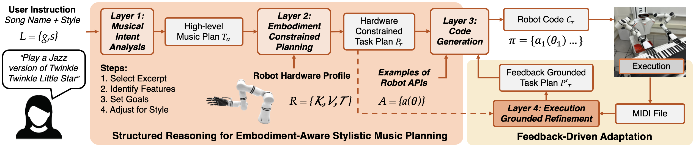
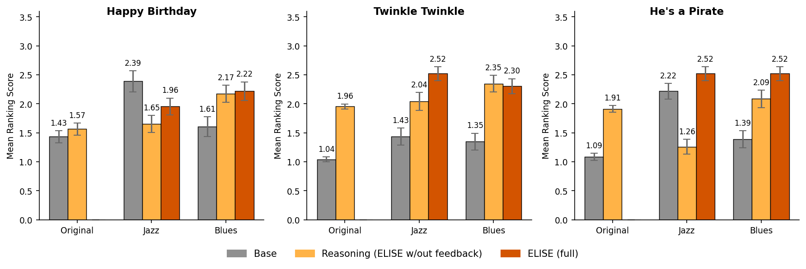
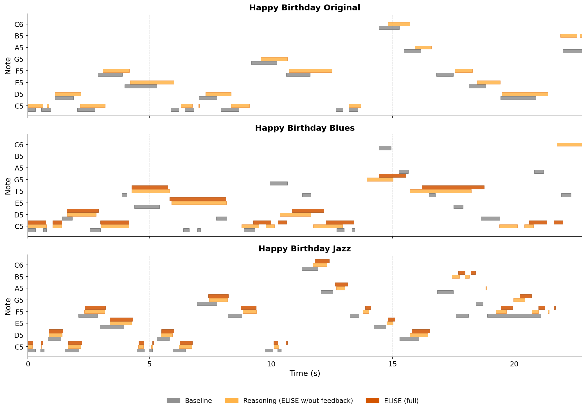
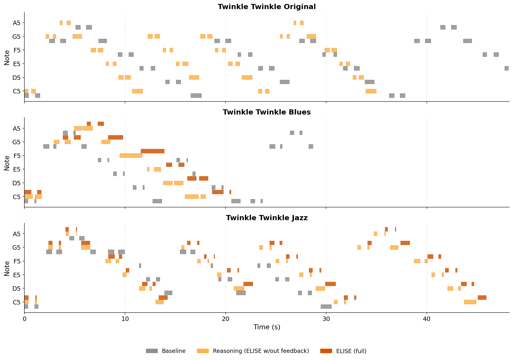
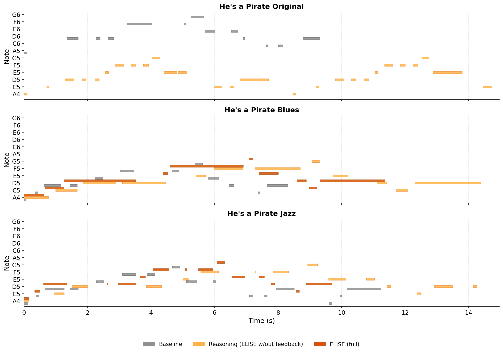
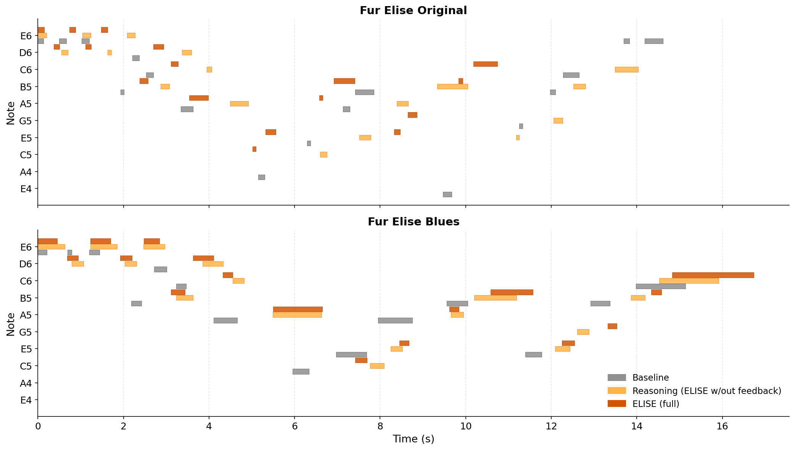
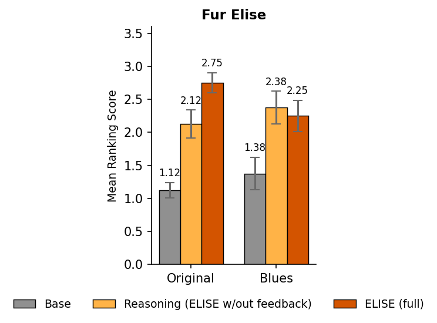
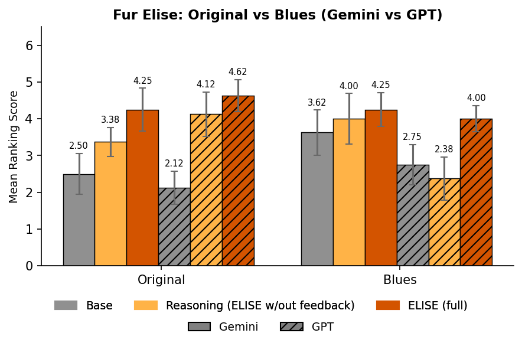

March 5, 2026
Enabling robots to translate high-level human intent into physically grounded action remains a central challenge in human-robot interaction. Although recent vision-language and large language models can generate structured plans from natural language, they lack embodiment awareness and often produce physically infeasible or perceptually misaligned behavior. This gap is particularly pronounced in expressive tasks, where users specify stylistic qualities (e.g., "play this in jazz style") that must be realized through temporally precise, constraint-bound motor control. Robotic piano performance exemplifies this challenge, requiring high-frequency dexterous execution under strict hardware limitations. We present ELISE, a structured multi-stage VLM framework for style-conditioned dexterous skill synthesis under embodiment constraints. Rather than collapsing intent interpretation, hardware adaptation, and control generation into a single prompt, ELISE decomposes reasoning into sequential stages spanning musical intent analysis, embodiment-constrained planning, robot-API-level code generation, and iterative refinement using execution-derived feedback. This staged design enables explicit alignment between abstract stylistic intent and physically feasible execution while maintaining transparency across reasoning layers. We evaluate ELISE on a humanoid robot equipped with constrained dexterous hands, performing three songs under original, jazz, and blues styles. In a blind ranking study across 24 real-robot performances, the proposed framework significantly improves both melodic faithfulness and perceptual style alignment compared to direct single-prompt code generation.
ELISE is a multi-stage framework designed to bridge high-level stylistic intent with physically executable robot actions. Instead of a single, complex prompt, ELISE uses a sequential reasoning process, where each stage refines an intermediate representation, separating perceptual understanding from physical embodiment and low-level execution. The framework consists of four main layers:

Figure 1: Overview of ELISE. The core components of ELISE are a layered reasoning pipeline (layer 1-3) for decomposing task goal, style goal, and embodiment constraints; and a feedback-driven adaptation module (layer 4) for further grounding a refinement.
Experiments were conducted on a RealMan humanoid robot with OYMotion ROHand dexterous hands, playing a digital piano with a single hand. Both hard (e.g., white keys only, four fingers) and soft constraints (e.g., wrist repositioning latency) were imposed. ELISE, instantiated with Gemini 3.0 Pro, was evaluated on three songs ('Happy Birthday', 'Twinkle Twinkle Little Star', 'He’s a Pirate') in three styles (Original, Jazz, Blues). We compared three methods: 'Baseline' (direct code generation), 'Reasoning Only' (ELISE without execution feedback), and 'ELISE (Full)' (complete ELISE pipeline). A blind ranking user study with 22 participants assessed perceived style alignment, testing if structured reasoning and execution feedback improved performance.

Figure 4: User study results of perceived alignment of styles. Average ranking scores (with standard error) of different method for each style across the three tested songs are plotted.
Overall, structured methods (Reasoning and Full ELISE) significantly outperformed the Baseline in perceptual rankings across most song-style combinations, showing that staged reasoning greatly enhances style coherence (Fig. 4). A notable observation was that many baseline videos failed to complete the song due to code execution issues, highlighting ELISE's better understanding of robot physical limitations.
| Method | Jazz | Blues | Original |
|---|---|---|---|
| Base | Video 19 | Video 22 | Video 24 |
| Reasoning | Video 11 | Video 15 | Video 18 |
| Feedback | Video 9 | Video 12 | - |

Happy Birthday: Note comparison across styles.
| Method | Jazz | Blues | Original |
|---|---|---|---|
| Base | Video 16 | Video 20 | Video 23 |
| Reasoning | Video 6 | Video 10 | Video 13 |
| Feedback | Video 4 | Video 7 | - |

Twinkle Twinkle Little Star: Note comparison across styles.
| Method | Jazz | Blues | Original |
|---|---|---|---|
| Base | Video 14 | Video 17 | Video 21 |
| Reasoning | Video 2 | Video 5 | Video 8 |
| Feedback | Video 1 | Video 3 | - |

He's a Pirate: Note comparison across styles.
The 'Für Elise' case study showcased ELISE's integration of stylistic intent and embodiment constraints across Original and Blues styles. For the Original version, ELISE successfully adapted the melody to white-key-only constraints by intelligently substituting black keys, maintaining musical structure. In Blues style, ELISE generated more consistent shuffle-like rhythms than the baseline, which exhibited irregular timing. Both 'Reasoning-only' and 'Full ELISE' variants were perceptually preferred over the baseline by participants (Fig. 3), indicating that embodiment-aware planning is key to improvements. MIDI visualizations (Fig. 2) and user rankings further reflected Gemini 3.0's superior adherence to constraints and clearer stylistic differentiation compared to GPT-5.2.

Figure 2: Case Study. Note comparison chart of Für Elise in Original (top) and Blues (bottom) styles.

Figure 3: User study results of Für Elise.

Figure 5: Comparison of GPT and Gemini 3.0 Pro performance for Für Elise.
ELISE is a multi-stage, language-conditioned framework that significantly improves stylistic robotic piano performance without requiring task-specific training data. By decoupling musical intent analysis, embodiment-aware planning, code generation, and execution-grounded refinement, ELISE enhances perceptual style alignment and reduces discrepancies between planned and executed performances. While promising, current limitations include reliance on short musical excerpts, sensitivity to prompt phrasing, and single-hand, white-key-only constraints. Future work will focus on extending to longer compositions, improving prompt robustness, and enabling two-hand coordination.
@article{anonymous2026embodied,
title={ELISE: Embodied Language Intent-to-Skill Execution},
author={Anonymous Authors},
journal={Anonymous Journal},
year={2026},
volume={1},
number={1},
pages={1--8},
}